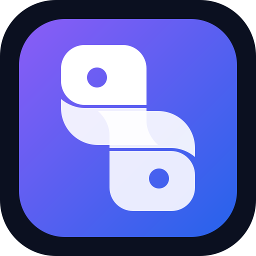

Dein Python-Lehrer
UnterrichtUnterrichtsphasen
Du kannst jederzeit zu bereits erreichten Inhalten zurückkehren.
Frage an deinen Lehrer
Frage zum aktuellen Stoff, zur Aufgabe oder zu deinem Code.

Du kannst jederzeit zu bereits erreichten Inhalten zurückkehren.
Frage zum aktuellen Stoff, zur Aufgabe oder zu deinem Code.